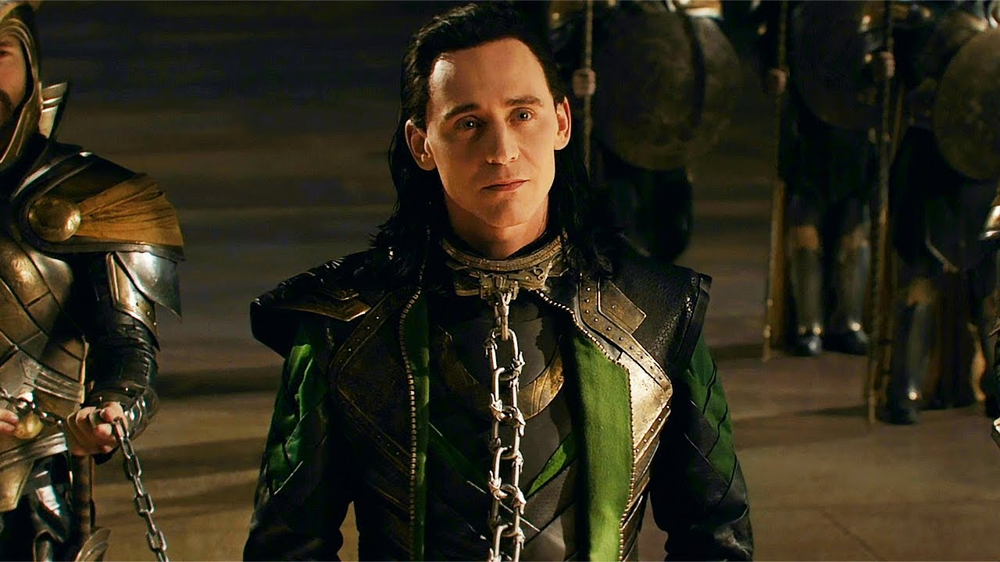
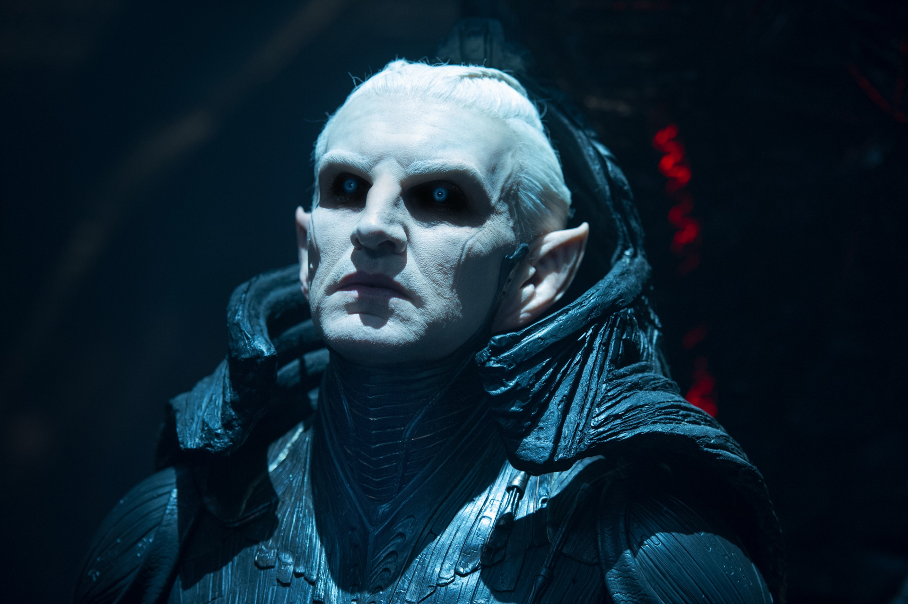

ソー
九つの世界の調停者 // アスガルドの次期王
アベンジャーズの戦いの後、乱れた九つの世界の暴動を鎮め、真の王としての風格を身につけつつある。ロキを地下牢に幽閉したことを気に病みながらも、エーテルを宿してしまった恋人ジェーンを守るため、そしてアスガルドを襲うダーク・エルフを打倒するために、王の制止を振り切り禁忌の作戦へ打って出る。
「……ロキ、今度私を裏切ったら殺すからな。」

ロキ
地下牢の罪人 // 復讐のために兄と手を組むトリックスター
地球侵略の罪で終身刑となり地下牢に幽閉されていたが、育ての母フリッガがダーク・エルフに殺害されたことで激しい復讐心に燃え、ソーとの一時的な結託を承諾する。数々の幻影魔術で周囲を翻弄し、命懸けでソーを護って戦いの中で散ったかに見えたが……。
「私を信じるなと言ったはずだ」
ジェーン・フォスター
エーテルに寄生された天才科学者
ロンドンでコンバージェンス（惑星直列）による重力異常を観測中、世界の狭間に迷い込み、数千年封印されていたインフィニティ・ストーンのうちの一つ、リアリティ・ストーンを身体に宿してしまう。その圧倒的な赤黒いエネルギーに命を蝕まれるが、ソーによって神の国アスガルドへ連れて行かれ、治療の道を模索する。
「戻ってくるのに2年もかかるなんてどういうこと！？」

マレキス
闇の時代の覇者 // ダーク・エルフの指導者
光が生まれる前の宇宙を支配していた古代種族「ダーク・エルフ」の冷酷なリーダー。かつてソーの祖父ボーに奪われた兵器エーテルを再び奪還し、九つの世界が直列する「コンバージェンス」の瞬間を利用して、全宇宙の光を消し去り再び永遠の闇に塗り替えようと目論む。
「この宇宙の光をすべて消し去り、我が一族の愛した気高き『闇』を取り戻すのだ。……エーテルは我がものだ。」